import sys, pathlib
sys.path.insert(0, str(pathlib.Path("_includes").resolve()))
from setup import configure_warnings, ensure_matplotlib_initialized
ensure_matplotlib_initialized()
configure_warnings()
import numpy as np
import pandas as pd
import ggnomics as gg
from plotnine import theme_bw, theme, labs, element_textPlot gallery
Plot functions organized by analysis task
Use this gallery to find a plot by analysis task. Each section gives the relevant functions, the input type used in the example, and a compact code example. Links point to the workflow pages when more biological or technical context is useful.
from data import (
load_zeisel_subset, run_scranpy_pipeline_on_zeisel, load_baron,
run_deseq2_on_emtab1625, load_pbmc_cite_seq, run_scranpy_pipeline_on_cite_seq_rna,
load_tcr_repertoire,
)
zeisel_subset = load_zeisel_subset()
zeisel_final = run_scranpy_pipeline_on_zeisel()
baron = load_baron()
baron_cd = baron.get_column_data().to_pandas()
bulk_fit = run_deseq2_on_emtab1625()
mods, _note = load_pbmc_cite_seq()
cite_final = run_scranpy_pipeline_on_cite_seq_rna()
tcr = load_tcr_repertoire()Package 'multiassayexperiment' is not installed.Reduced dimensions
| Function | Purpose | Type used | Dataset |
|---|---|---|---|
plot_umap |
UMAP scatter | SingleCellExperiment |
Zeisel |
plot_pca |
PCA scatter | SingleCellExperiment |
Zeisel |
plot_reduced_dim / dim_plot |
Generic embedding plot (any key) | SingleCellExperiment |
Zeisel |
sc_pca.run_pca / sc_pca.plot_pca |
Single-cell PCA computed via scikit-learn (no scranpy) | SingleCellExperiment |
Zeisel subset |
sc_umap.run_umap / sc_umap.plot_umap |
Single-cell UMAP via umap-learn |
SingleCellExperiment |
Zeisel subset |
bulk_pca.plot_pca |
Bulk/SE PCA | SummarizedExperiment |
E-MTAB-1625 (VST) |
gg.plot_umap(zeisel_final, color="clusters") + theme_bw() + labs(title="plot_umap — full workflow: single-cell-scranpy.qmd")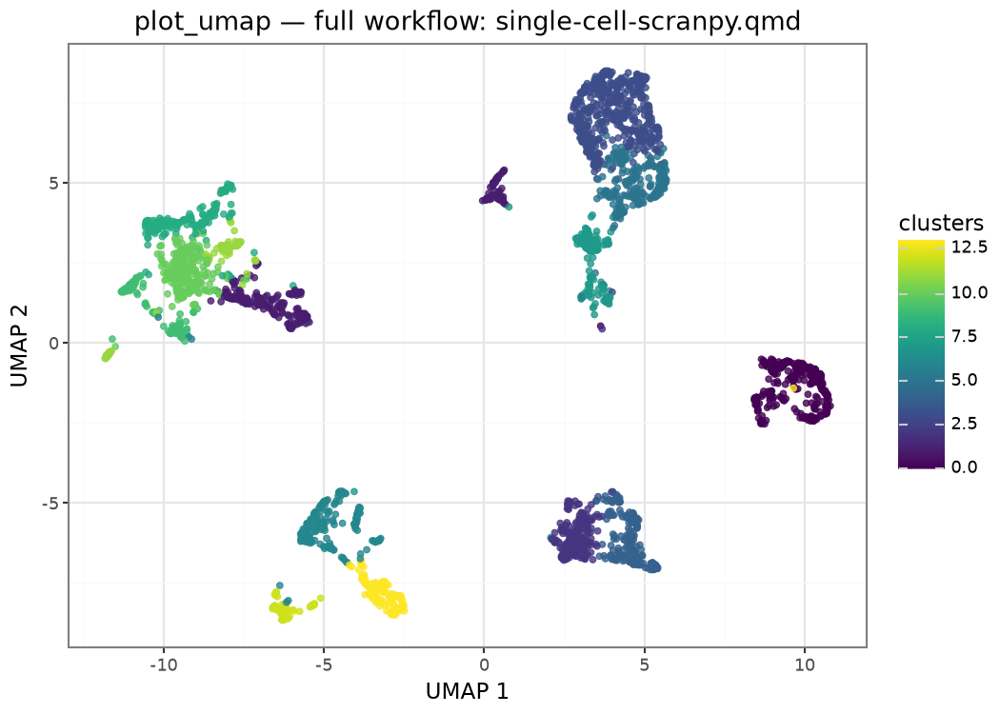
plot_reduced_dim and dim_plot are aliases of plot_embedding. plot_tsne selects X_tsne; here those coordinates were calculated by run_all_neighbor_steps_se together with PCA and UMAP:
p_reduced = gg.plot_reduced_dim(zeisel_final, dimred="X_pca", color="clusters") + theme_bw() + labs(title="plot_reduced_dim")
p_dim = gg.dim_plot(zeisel_final, dimred="X_umap", color="clusters") + theme_bw() + labs(title="dim_plot (alias)")
p_tsne = gg.plot_tsne(zeisel_final, color="clusters") + theme_bw() + labs(title="plot_tsne")
p_reduced / p_dim / p_tsne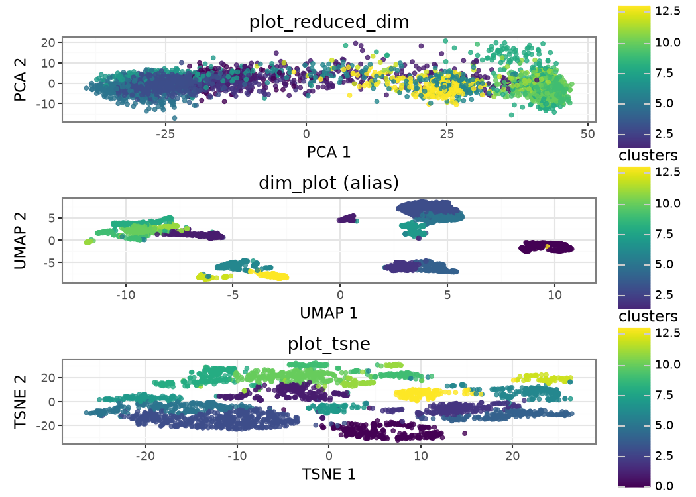
ggnomics.sc_pca and ggnomics.sc_umap provide PCA and UMAP through scikit-learn and umap-learn, without a scranpy dependency. The top-level ggnomics.plot_pca only displays coordinates already stored in the input object.
sub2 = load_zeisel_subset()
gg.sc_pca.run_pca(sub2, assay_name="counts", dest_key="PCA", n_components=10)
gg.sc_umap.run_umap(sub2, assay_name="counts", dest_key="UMAP")
p_pca = gg.sc_pca.plot_pca(sub2, color="level1class") + theme_bw() + labs(title="sc_pca (sklearn)")
p_umap = gg.sc_umap.plot_umap(sub2, color="level1class") + theme_bw() + labs(title="sc_umap (umap-learn)")
p_pca | p_umap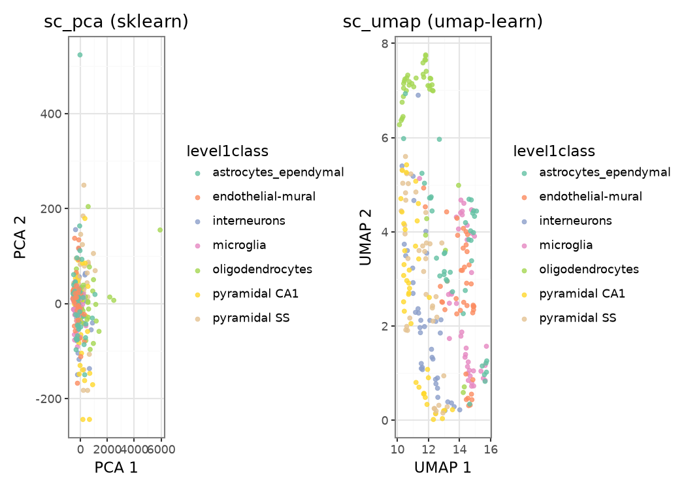
bulk_pca.plot_pca is demonstrated in full in Bulk RNA-seq §7.
Expression distributions
| Function | Purpose | Type used | Dataset |
|---|---|---|---|
plot_expression |
Faceted violin per feature/group | SingleCellExperiment |
Zeisel |
plot_violin_stats |
Violin + automatic significance brackets | pd.DataFrame |
Zeisel |
plot_box_stats |
Box + automatic significance brackets | pd.DataFrame |
Zeisel |
expression_violin (legacy) |
Predecessor of plot_expression |
pd.DataFrame |
Zeisel |
ridge_density (legacy, no modern replacement) |
KDE ridge plot per group | pd.DataFrame |
Zeisel |
See Specialized plots for statistical annotations and significance brackets.
cd = zeisel_final.column_data.to_pandas()
gg.expression_violin(cd.assign(Snap25=np.asarray(zeisel_final.get_assay("logcounts")[list(zeisel_final.get_row_names()).index("Snap25"), :]).ravel()), value="Snap25", group="level1class") + theme_bw() + theme(axis_text_x=element_text(rotation=45, hjust=1)) + labs(title="expression_violin (legacy API)")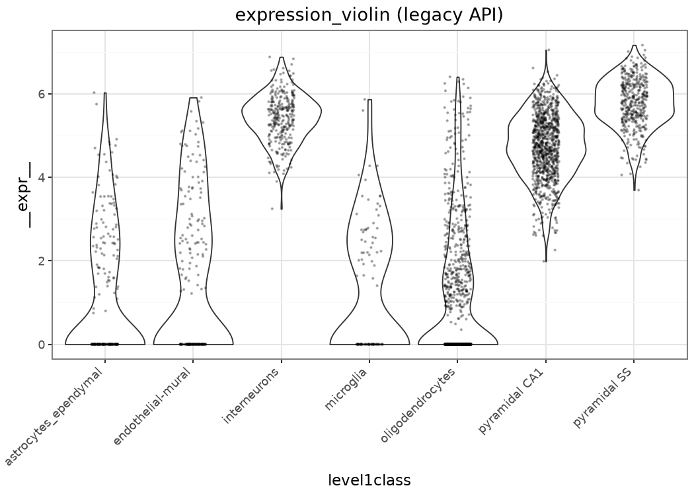
gg.ridge_density(cd, value="detected", group="level1class") + theme_bw() + theme(axis_text_x=element_text(rotation=45, hjust=1)) + labs(title="ridge_density — genes detected per class")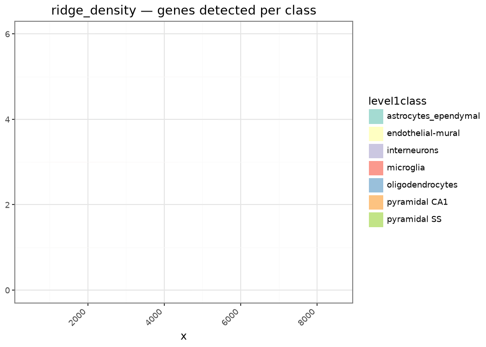
Metadata plots
| Function | Purpose | Type used | Dataset |
|---|---|---|---|
plot_coldata |
obs/colData scatter, violin, box, bar, strip | SingleCellExperiment |
Zeisel |
plot_rowdata |
var/rowData scatter | SingleCellExperiment |
Zeisel (HVG stats) |
qc_scatter (legacy) |
Simple QC scatter | pd.DataFrame |
Zeisel |
qc_histogram (legacy) |
Histogram of one column | pd.DataFrame |
Zeisel |
gg.plot_rowdata(zeisel_final, x="mean", y="variance") + theme_bw() + labs(title="plot_rowdata — HVG mean-variance trend (row_data)")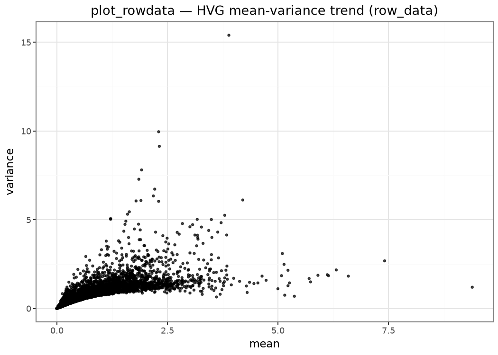
gg.qc_scatter(cd, x="sum", y="detected") + theme_bw() + labs(title="qc_scatter (legacy)")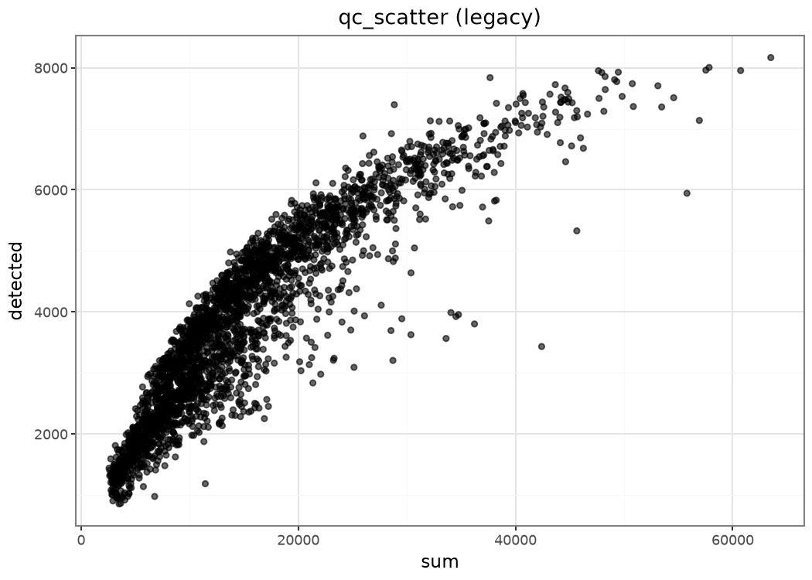
gg.qc_histogram(cd, value="subset_proportion.mito", bins=40) + theme_bw() + labs(title="qc_histogram (legacy) — mitochondrial proportion")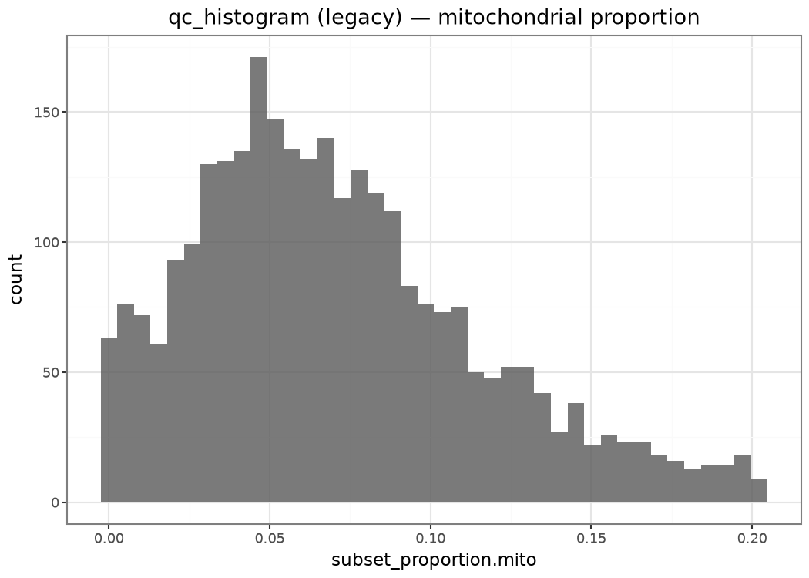
Scatter plots
| Function | Purpose | Type used | Dataset |
|---|---|---|---|
plot_scatter |
General x/y scatter | SingleCellExperiment |
Zeisel |
plot_scatter_marginal |
Scatter + marginal densities (Compose) |
pd.DataFrame |
Zeisel |
plot_pairs |
Scatterplot matrix of embedding components | SingleCellExperiment |
Zeisel subset |
plot_embedding_panel |
Grid of embedding panels, one per feature (Compose) |
SingleCellExperiment |
Zeisel |
gg.plot_scatter(cd, x="sum", y="detected", color="level1class") + theme_bw() + labs(title="plot_scatter")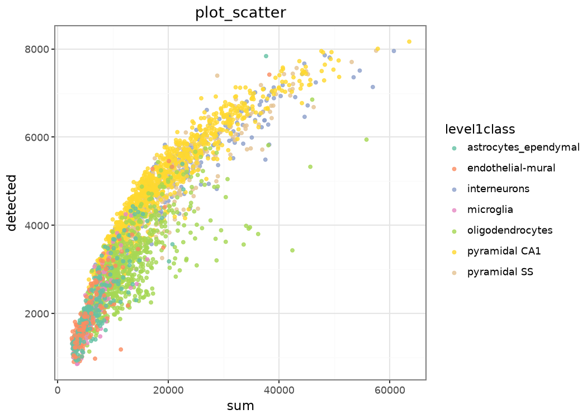
gg.plot_scatter_marginal(cd, x="sum", y="detected", color="level1class")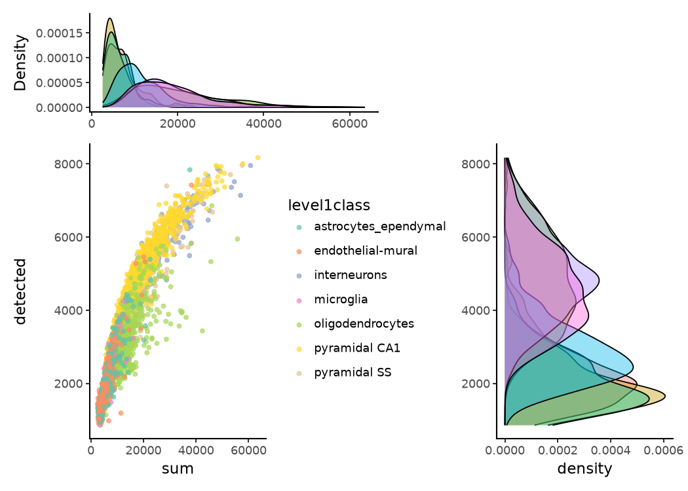
gg.plot_pairs(sub2, dimred="X_pca", n_components=4, color_by="level1class")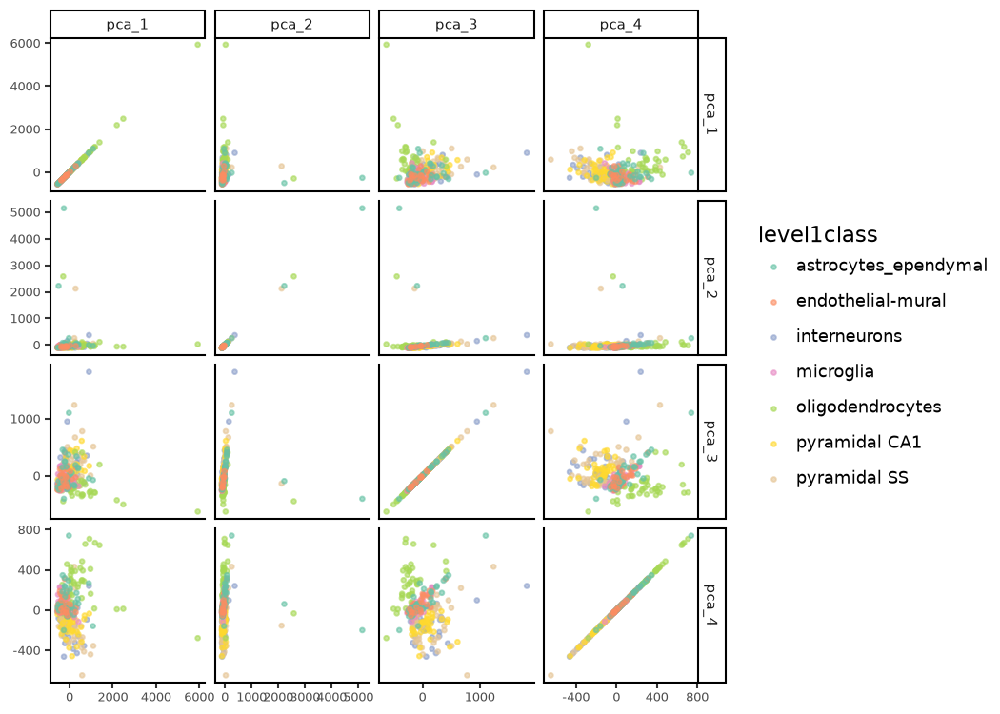
gg.plot_embedding_panel(zeisel_final, features=["Gfap", "Mog", "Gad2", "Aif1"], dimred="X_umap", ncol=2)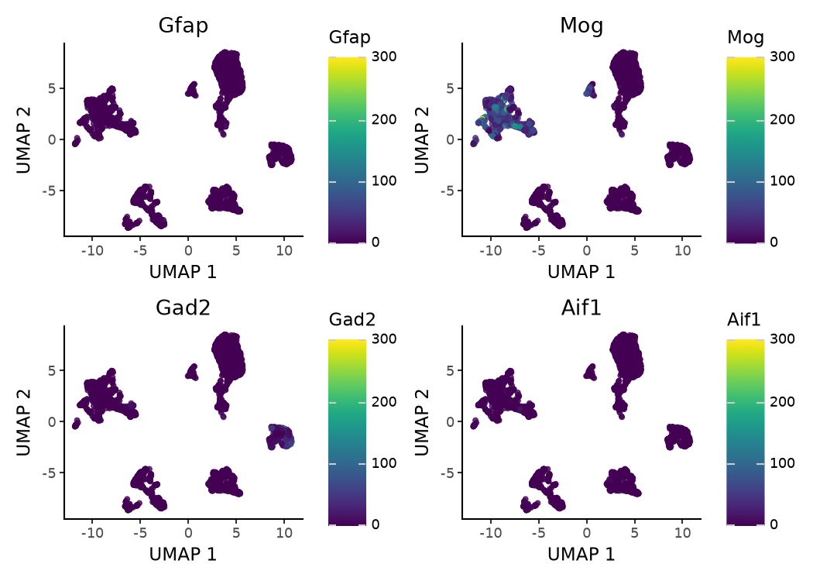
Abundance and composition
Counts, fractions, and donor-aware grouping are shown in Specialized plots.
| Function | Purpose | Type used | Dataset |
|---|---|---|---|
plot_abundance |
Stacked composition bar | pd.DataFrame |
Baron |
cluster_composition_barplot (legacy) |
Predecessor of plot_abundance |
pd.DataFrame |
Baron |
gg.cluster_composition_barplot(baron_cd, cluster_col="label", group_col="donor") + theme_bw() + theme(axis_text_x=element_text(rotation=45, hjust=1)) + labs(title="cluster_composition_barplot (legacy)")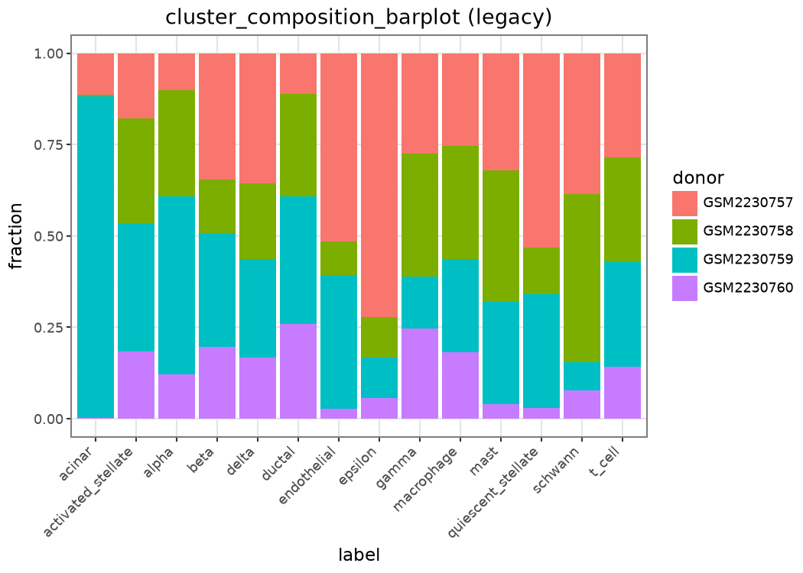
QC
plot_pseudobulk_qc is demonstrated with the four Baron donors in Specialized plots. RNA and ADT quality-control plots are covered separately in Multimodal.
Dot plots
| Function | Purpose | Type used | Dataset |
|---|---|---|---|
plot_dot |
Mean expression x fraction expressing | SingleCellExperiment |
Zeisel |
marker_dotplot (legacy) |
Tidy-table dot plot | pd.DataFrame |
Zeisel |
marker_dotplot_from_matrix (legacy) |
Matrix-in dot plot | np.ndarray |
Zeisel |
markers = ["Gfap", "Mog", "Gad2", "Snap25"]
gfap_idx = [list(zeisel_final.get_row_names()).index(g) for g in markers]
expr_mat = np.asarray(zeisel_final.get_assay("logcounts")[gfap_idx, :])
expr_df = pd.DataFrame(expr_mat.T, columns=markers)
p = gg.marker_dotplot_from_matrix(expr_df, groups=cd["level1class"].to_numpy(), genes=markers, expr_threshold=0.1)
p + theme_bw() + theme(axis_text_x=element_text(rotation=45, hjust=1)) + labs(title="marker_dotplot_from_matrix (legacy)")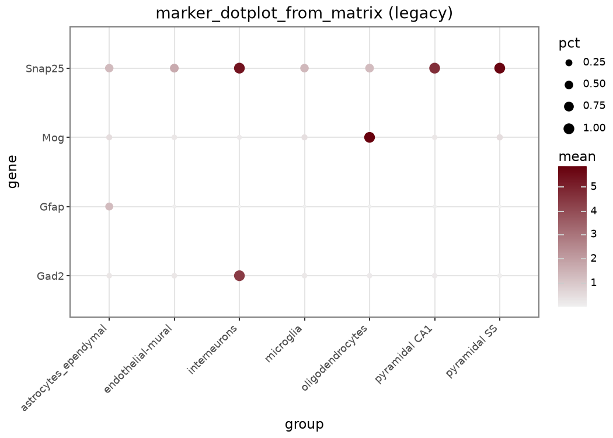
Highest-expressed features
gg.plot_highest_exprs(zeisel_final, n=15, layer="counts") + theme_bw() + labs(title="plot_highest_exprs — Zeisel")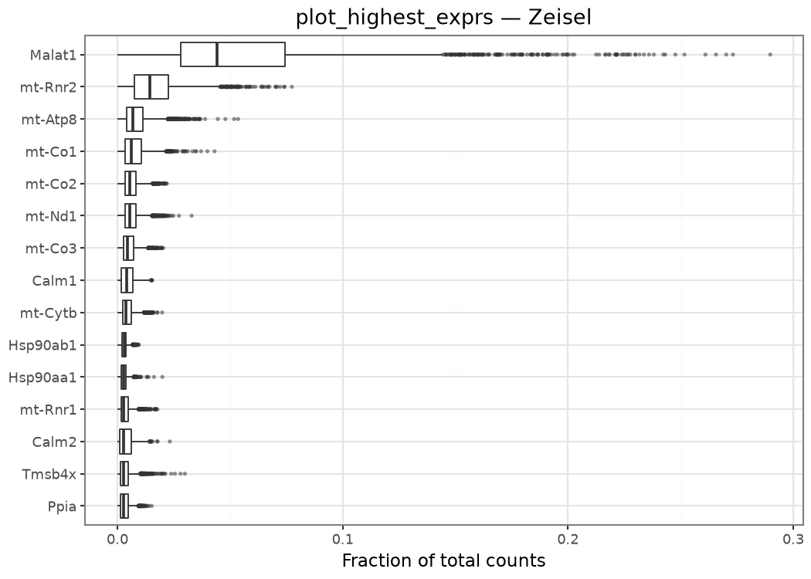
Heatmaps
| Function | Purpose | Type used | Dataset |
|---|---|---|---|
plot_heatmap |
Expression heatmap, optional clustering | SingleCellExperiment/pd.DataFrame |
Zeisel, Baron, E-MTAB-1625 |
heatmap_from_matrix (legacy) |
Matrix-in heatmap | np.ndarray |
Zeisel |
heatmap_long (legacy) |
Tidy long-format heatmap | pd.DataFrame |
Zeisel |
Marsilea (ma.Heatmap) |
Composable clustered heatmap (interop, not wrapped by ggnomics) | np.ndarray |
E-MTAB-1625 |
For grouped, bulk, and Marsilea heatmaps, see: Single-cell analysis §11, Bulk RNA-seq §10, Specialized plots.
gg.heatmap_from_matrix(expr_mat, row_names=markers, col_names=None, zscore_rows=True) + theme(axis_text_x=element_text(size=3))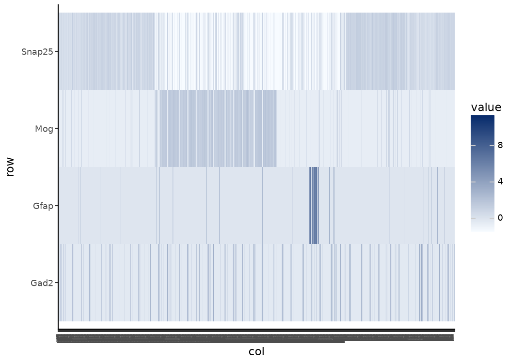
Differential expression
The complete analysis is shown in Bulk RNA-seq, with additional visualizations in Specialized plots.
| Function | Purpose | Type used | Dataset |
|---|---|---|---|
plot_volcano |
Volcano plot | pd.DataFrame (PyDESeq2 results) |
E-MTAB-1625 |
plot_ma |
MA plot | pd.DataFrame |
E-MTAB-1625 |
plot_coef_lollipop |
Top-n coefficients, lollipop | pd.Series/pd.DataFrame |
E-MTAB-1625 |
plot_coef_expression |
Expression of top-coefficient features | pd.DataFrame |
E-MTAB-1625 |
volcano_plot (legacy) |
Predecessor of plot_volcano |
pd.DataFrame |
E-MTAB-1625 |
results = bulk_fit["results"]
gg.volcano_plot(results.rename(columns={"log2FoldChange": "log2fc", "padj": "padj"}), log2fc="log2fc", padj="padj") + theme_bw() + labs(title="volcano_plot (legacy)")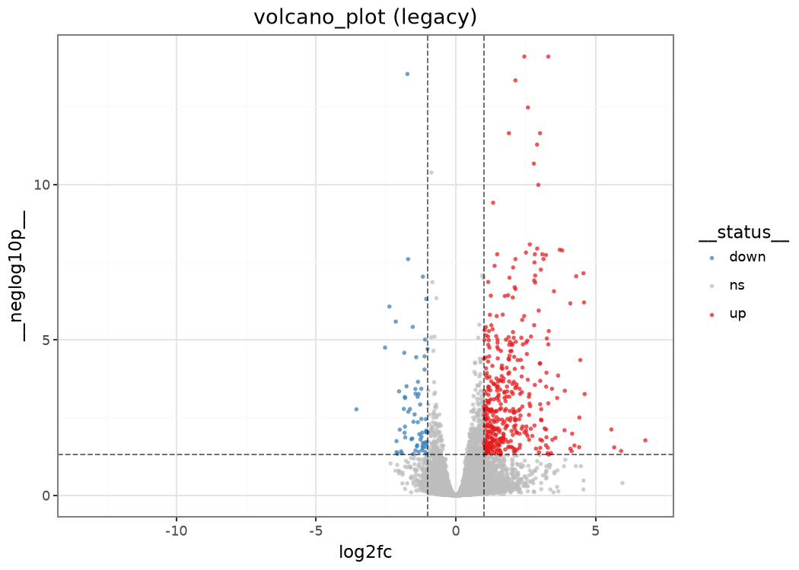
coefs = results[["log2FoldChange"]].rename(columns={"log2FoldChange": "coefficient"}).dropna()
data = bulk_fit["vst"].copy()
data["growth_condition"] = bulk_fit["metadata"]["growth_condition"].to_numpy()
gg.plot_coef_expression(data, coefs, group_by="growth_condition", top_n=10, plot_type="dot") + theme_bw() + theme(axis_text_x=element_text(rotation=45, hjust=1)) + labs(title="plot_coef_expression")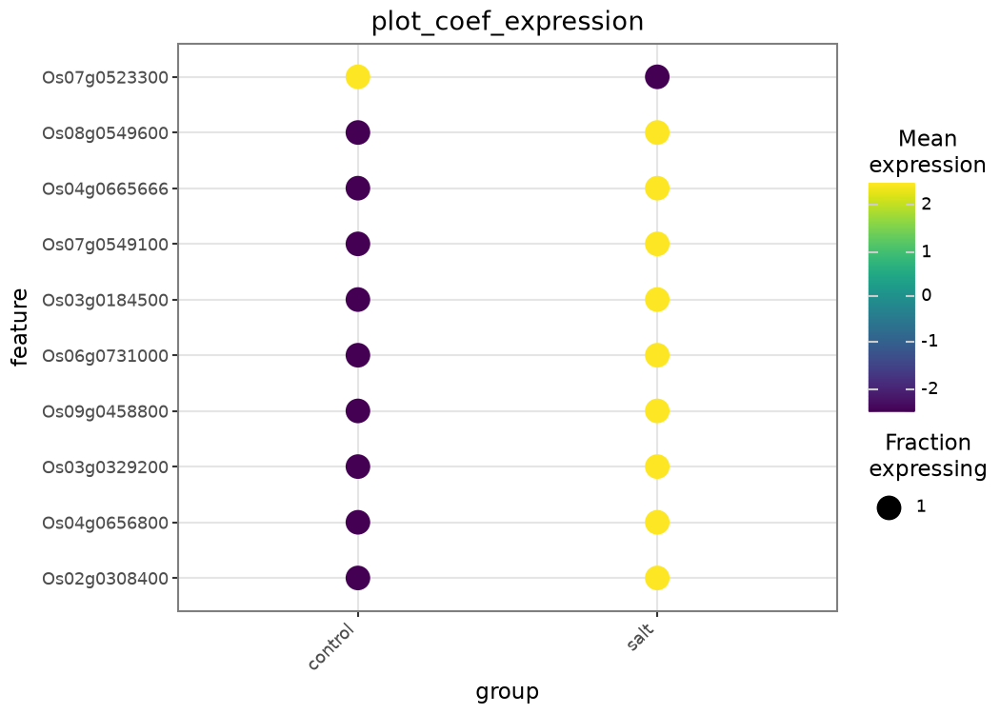
Pseudobulk
plot_pseudobulk_qc is fully covered on Baron in Specialized plots. plot_pseudobulk_de accepts a dict[str, DataFrame] of differential- expression results. Here the keys identify the three E-MTAB-1625 time points:
per_timepoint = {tp: run_deseq2_on_emtab1625(tp)["results"] for tp in ["1 hour", "5 hour", "24 hour"]}
results_by_tp = {tp.replace(" ", "_"): df for tp, df in per_timepoint.items()}
{k: int((df["padj"] < 0.05).sum()) for k, df in results_by_tp.items()}{'1_hour': 14, '5_hour': 8, '24_hour': 832}gg.plot_pseudobulk_de(results_by_tp, mode="volcano", ncol=3)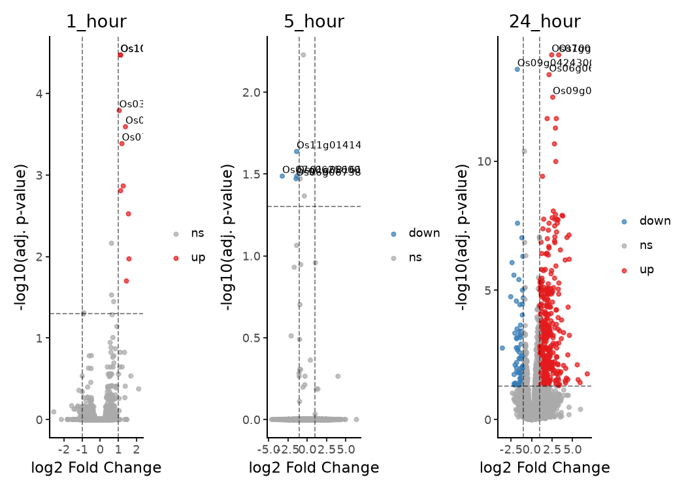
gg.plot_pseudobulk_de(results_by_tp, mode="summary_bar") + theme_bw()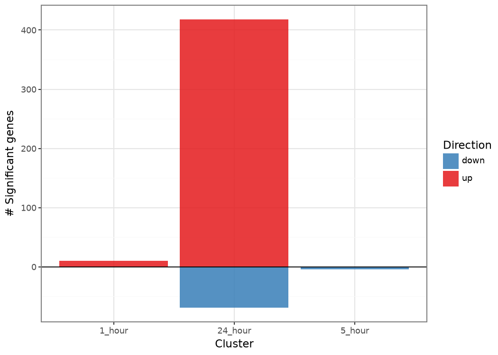
mode="upset" uses the native ggnomics.upset backend (part of the normal package — no extra install required for plotting) and returns an ordinary plotnine.composition.Compose, showing which significant genes are shared across timepoints:
gg.plot_pseudobulk_de(results_by_tp, mode="upset")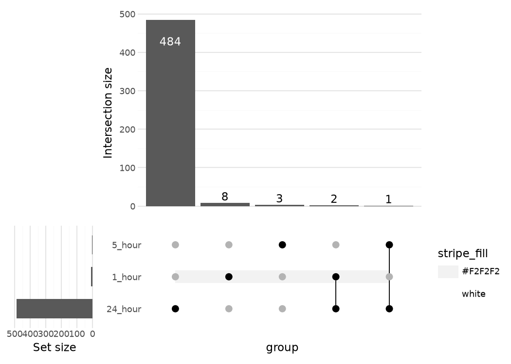
Native UpSet plots
ggnomics.upset is a native Plotnine set-intersection (“UpSet”) plot implementation — no Matplotlib-based upsetplot dependency. See UpSet plots for the full workflow (computation internals, region-selection modes, highlighting, custom annotations, Venn helpers, and the statistical-comparison caveats); this table is a compact function index.
| Function | Purpose |
|---|---|
upset.upset |
High-level plot: raw data or prepared UpSetData -> Compose |
upset.upset_data / compute_intersections / select_intersections / apply_intersection_selection |
The compute -> select -> apply pipeline behind upset() |
upset.intersection_size, upset.intersection_ratio, upset.upset_annotate |
Built-in and custom annotation panels |
upset.intersection_matrix, upset.upset_set_size, upset.upset_stripes |
Matrix, marginal set-size, and stripe styling |
upset.upset_query |
Highlight a set, intersection, or (not yet implemented) group |
upset.upset_themes, upset.upset_default_themes, upset.upset_modify_themes |
Per-component theme collections |
upset.compare_between_intersections, upset.upset_test |
Optional (ggnomics[upset]) statistical comparisons across intersections |
upset.arrange_venn, upset.geom_venn_circle, upset.geom_venn_region, upset.scale_fill_venn_mix, … |
Approximate 2-4 set Venn diagrams |
Multimodal
See Multimodal for the RNA/ADT workflow and the input requirements of plot_adt_qc.
import mudata as mu
mu.set_options(pull_on_update=False)
mdata = mu.MuData({"rna": mods["rna"], "prot": mods["adt"]})
gg.plot_bimodal_scatter(mdata, x_feature="CD3E", y_feature="CD3", x_mod="rna", y_mod="prot") + theme_bw() + labs(title="plot_bimodal_scatter — reused from multimodal.qmd")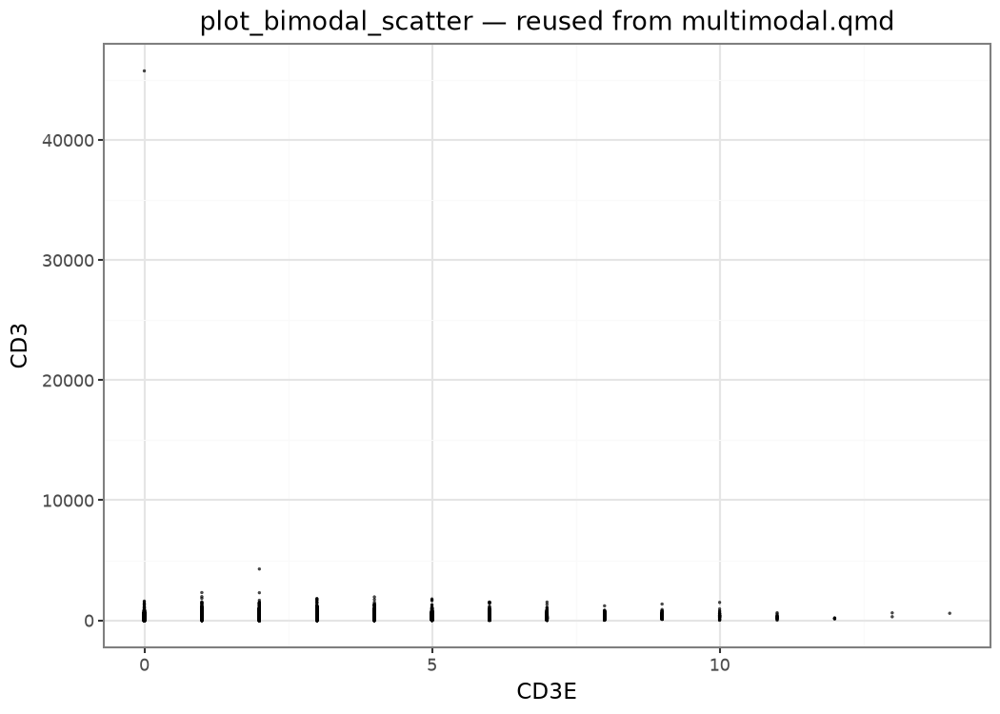
Repertoire
The repertoire workflow is described in Specialized plots.
trb = tcr[(tcr["chain"] == "TRB") & (tcr["raw_clonotype_id"] != "None")].dropna(subset=["v_gene", "j_gene"])
cell_level = trb.drop_duplicates(subset=["barcode", "condition"])
gg.plot_clonotype_abundance(cell_level, clonotype_col="clonotype_id", sample_col="condition", top_n=10) + theme_bw() + theme(axis_text_x=element_text(rotation=45, hjust=1))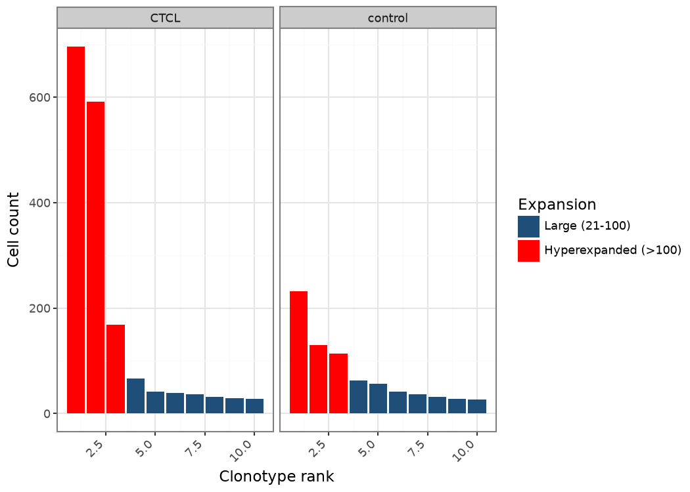
Significance brackets (ggnomics.signif)
| Function | Purpose |
|---|---|
geom_signif |
ggsignif-style bracket layer/geom |
run_comparisons |
Pairwise statistical tests |
map_pvalue_to_stars |
p-value -> star label |
from ggnomics import run_comparisons, map_pvalue_to_stars
two_classes = cd[cd["level1class"].isin(["astrocytes_ependymal", "oligodendrocytes"])].copy()
gfap_idx = list(zeisel_final.get_row_names()).index("Gfap")
two_classes["Gfap"] = np.asarray(zeisel_final.get_assay("logcounts")[gfap_idx, :])[cd["level1class"].isin(["astrocytes_ependymal", "oligodendrocytes"]).to_numpy()]
stats_table = run_comparisons(two_classes["Gfap"], two_classes["level1class"], comparisons=[("astrocytes_ependymal", "oligodendrocytes")])
stats_table| group1 | group2 | statistic | pvalue | padj | n1 | n2 | |
|---|---|---|---|---|---|---|---|
| 0 | astrocytes_ependymal | oligodendrocytes | 102597.0 | 2.935794e-56 | 2.935794e-56 | 187 | 796 |
[map_pvalue_to_stars(p) for p in [0.5, 0.03, 0.005, 0.0005, 0.00001]]['ns', '*', '**', '***', '****']Brackets remain compatible with facets and themes, as shown in Specialized plots.
Palettes and themes
Palette examples and IGV attribution are provided in Specialized plots.
tableau = gg.get_palette(8, name="tableau")
bioc = gg.get_palette(8, name="bioc")
preview = pd.DataFrame({"i": [f"c{i}" for i in range(8)] * 2, "pal": ["tableau"] * 8 + ["bioc"] * 8, "v": 1})
preview["color"] = [tableau[i] for i in range(8)] + [bioc[i] for i in range(8)]
gg.plot_coldata(preview, x="i", y="pal", color_by="i", shape="point", size=8, palette={f"c{i}": tableau[i] for i in range(8)}) + theme_bw() + theme(legend_position="none") + labs(title="Tableau-10 palette preview")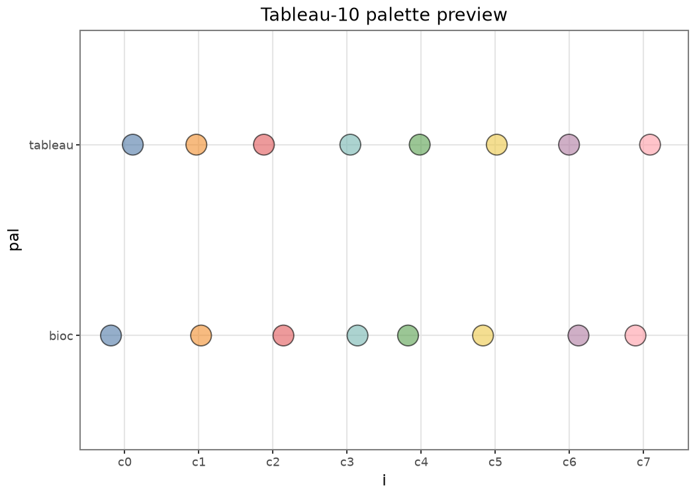
categories = pd.Series(["astrocytes_ependymal", "oligodendrocytes", "microglia"])
gg.resolve_palette(categories, palette={"microglia": "#000000"}){'microglia': '#000000',
'astrocytes_ependymal': '#4E79A7',
'oligodendrocytes': '#F28E2B'}Composed panels
| Function | Purpose |
|---|---|
hstack |
Side-by-side composition |
vstack |
Vertical composition |
grid |
Grid layout |
annotate_composition |
Title/subtitle/caption on a composition |
save_composition |
Save any composition to a file |
from ggnomics import hstack, vstack, grid, annotate_composition, save_composition
umap_p = gg.plot_umap(zeisel_final, color="clusters") + theme_bw()
violin_p = gg.plot_expression(zeisel_final, features=["Gfap"], group_by="level1class", layer="logcounts") + theme_bw() + theme(axis_text_x=element_text(rotation=45, hjust=1))
hstack(umap_p, violin_p)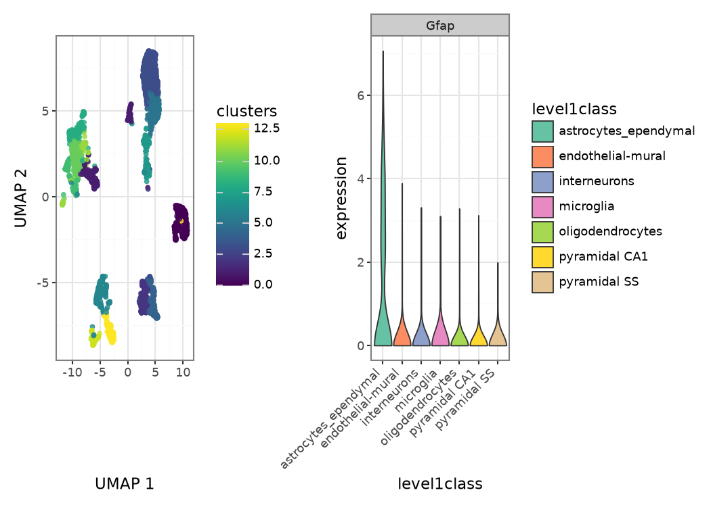
composed = grid([umap_p, violin_p, gg.plot_dot(zeisel_final, features=markers, group_by="level1class", layer="logcounts")], ncol=2)
annotated = annotate_composition(composed, title="Figure 1", caption="Zeisel mouse brain, ggnomics + scranpy")
annotated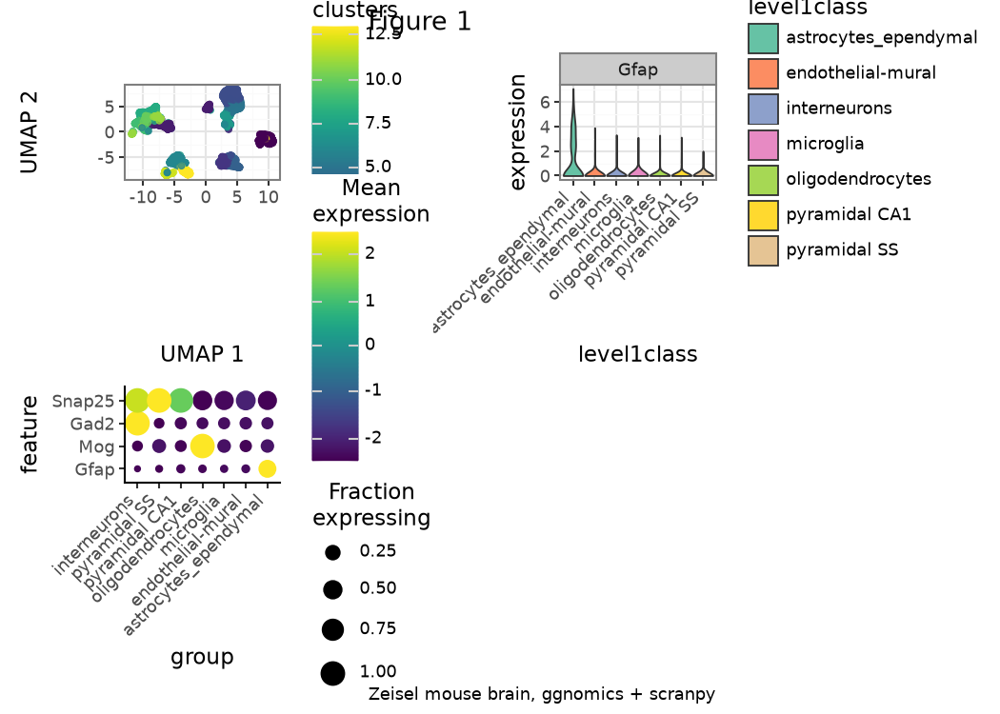
save_composition(annotated, str(pathlib.Path("_freeze_assets") / "composed_figure_1.png"), dpi=100)Additional API notes
plot_adt_qcrequires annotated isotype controls. The CITE-seq panel used here does not contain them; Multimodal §5 shows the validation behaviour and a control-free ADT QC plot.- The generic
ggnomics.pcalayer (run_pca_sklearn,run_pca_svd, andPcaResult) is used internally bybulk_pca.run_pcaandsc_pca.run_pca. It is not re-exported from the top-level namespace.